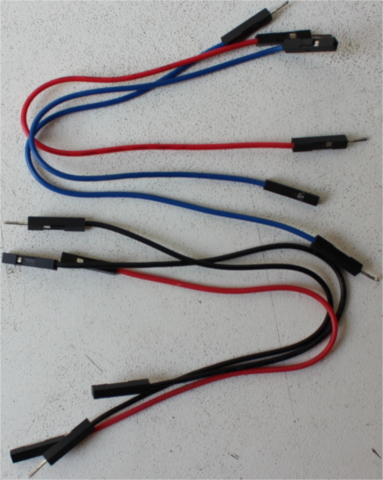

ハードウェア/知識の要求
この本を読む上で必要な知識は、Rustをある程度知っていることのみです。
ある程度を定量的に表現することは難しいです。
ジェネリクスを完全に理解している必要はありませんが、クロージャの使い方を知っている必要があります。
2018 editionのイディオムも知っている必要があります。特に、2018 editionではextern crateは必要ありません。
また、資料を理解するために、次のハードウェアが必要でしょう。
（いくつかの部品はオプションですが、用意することを推奨します）
- STM32F3DISCOVERYボード1台
（電子機器販売業者、サプライヤ、通信販売サイトでボードを購入できます）

- オプション。3.3VUSB <-> シリアルモジュール。このモジュールを資料では使います。 しかし、3.3Vで動作するモジュールであれば、他の物でも使用可能です。
((中国の)CH340Gモジュールが、通信販売サイトで購入できます。同じように動作し、より安価に入手できます。)
訳注：USB変換ケーブルでも大丈夫です。

- オプション。（ヘッダ付きの）HC-05 Bluetoothモジュール1つ。HC-06モジュールも使えます。
（他の中国部品と同様に、ほとんどを通信販売サイトで見つけることができます。 (米国)電子機器サプライヤは通常、何らかの理由でこれらをストックしていません）

- mini-B USBケーブル2本。1本はSTM32F3DISCOVERYボードを動かすのに必要です。 もう1本は、シリアル <-> USBモジュールがある時だけ、必要です。

注記 mini-B USBケーブルは、Androidスマートフォンに付属するUSBケーブルとは別物です。 Android付属のUSBケーブルはmicroUSBケーブルです。正しいものを持っていることを確認して下さい！
- ほぼオプション。5本のメス-メス、4本のオス-メス、1本のオス-オスジャンパ（別名 Dupont）ワイヤ。 ITMを機能させるために、1本のメス-メスワイヤが必要になる可能性が非常に高いです。 他のワイヤは、USB <-> シリアルとBluetoothモジュールを使う場合のみ必要です。

よくある質問と回答：なぜ、特定のハードウェアが必要なのですか？
私たちの人生をずっと簡単にします。
ハードウェアの差異を気にしなくて良いのであれば、資料は非常に取っ付きやすいものになります。 このことについては、私を信じて下さい。
よくある質問と回答：別の開発ボードでこの資料を理解できますか？
おそらく？2つの事項に依存します。あなたのこれまでのマイクロコントローラ開発経験と、
f3のような高レベルのcrateが、あなたの開発ボードに既に存在しているかどうかです。
私の意見としては、開発ボードが異なると、初心者向けで「話についていくのが容易」というこの文書の特徴をほとんど失うでしょう。
異なる開発ボードを持っていたり、自分を初心者とは考えていない場合は、quickstartプロジェクトテンプレートから始めた方が良いでしょう。